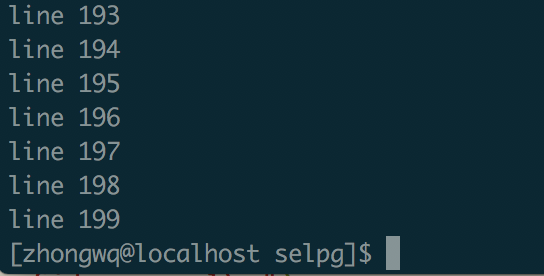
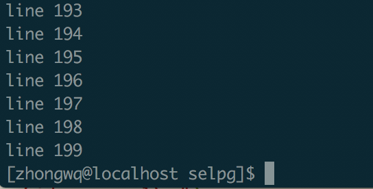
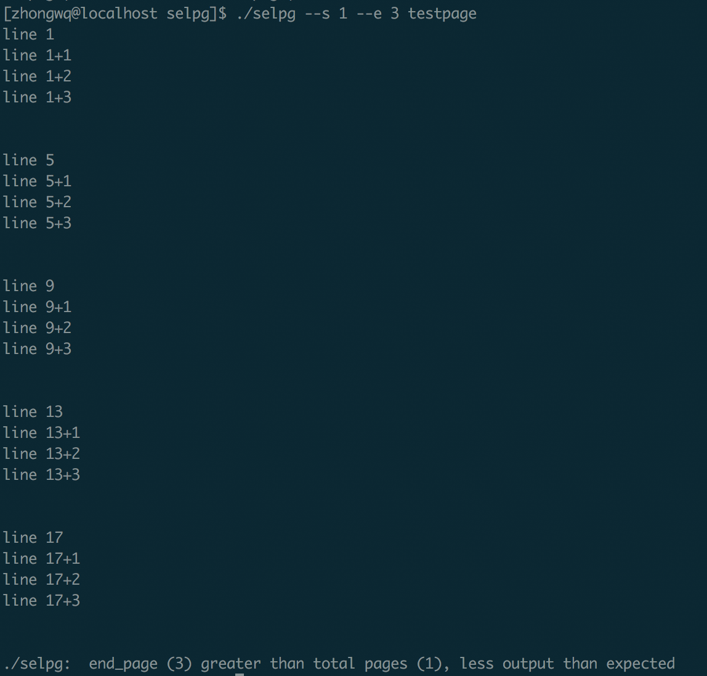
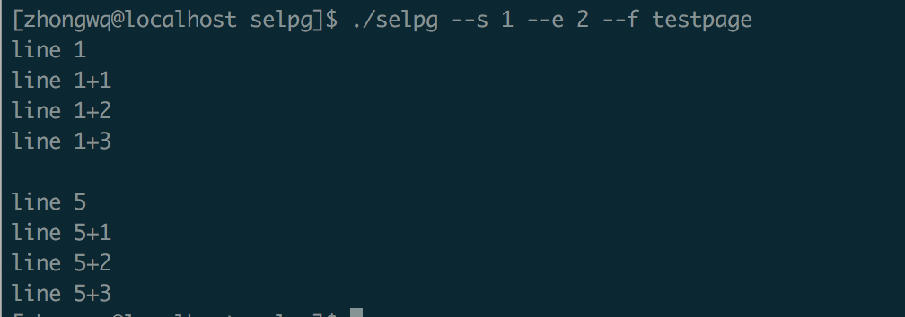
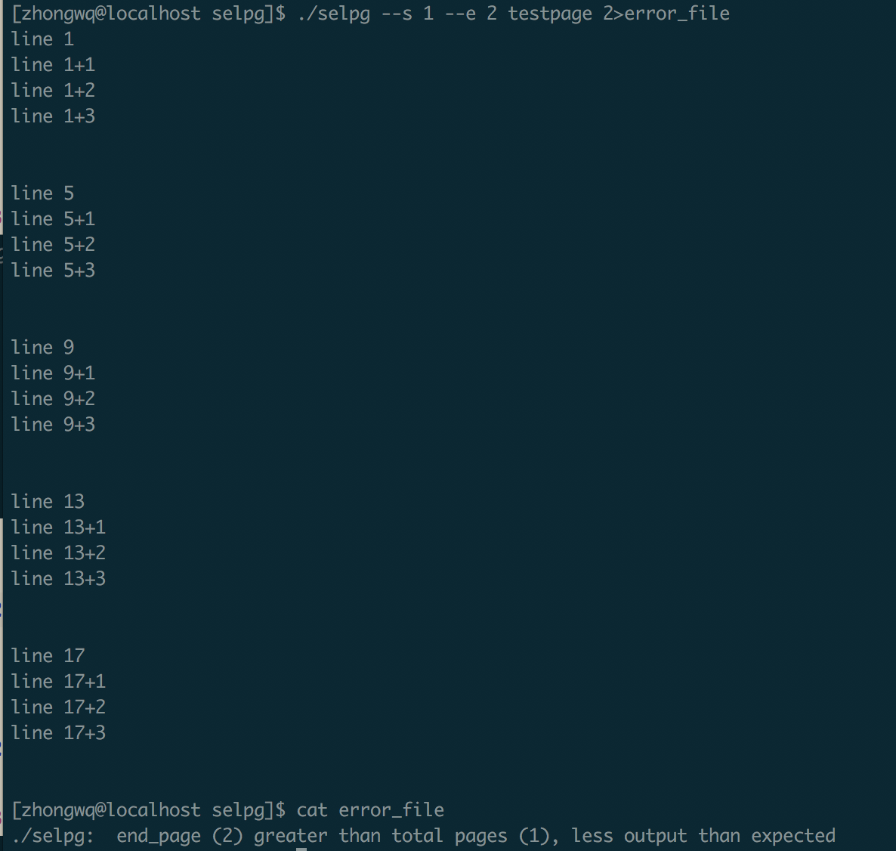
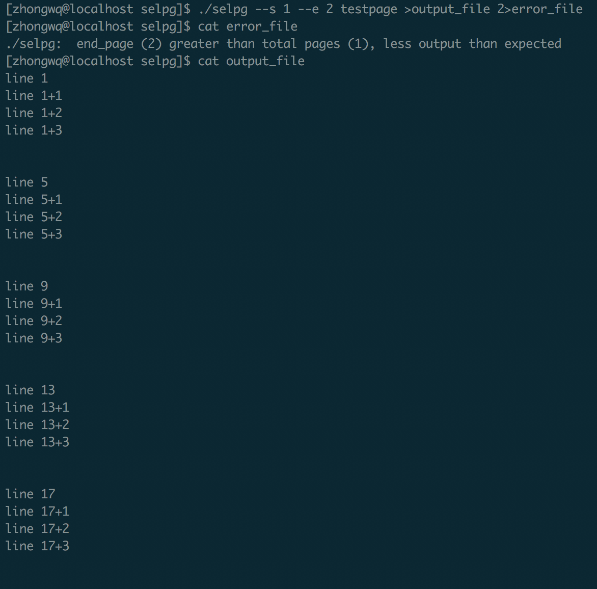

Golang版本的 Selpg
关于Selpg的说明
开发Linux 命令行实用程序中的selpg Selpg的C语言版本
具体代码
开发过程
程序总体设计
在看完上面开发Linux 命令行实用程序中的selpg的内容以及分析完Selpg的C语言版本后，我发现命令行程序的开发主要有以下几个部分:
- 读取命令行输入的指令
- 解析命令，将其中的参数结构化并检验是否合法
- 实现命令对应的操作
- 输入命令不合法或者操作出错时的提示
读取命令行输入的指令并解析，将其中的参数结构化
在go的开发中，我把读取指令及解析参数放到了一个部分，因为在golang中，提供了强大的flag(Pflag)库，我们很轻松就可以使用它完成指令的读取以及解析如下:
sa := new(selpg_args) // Get args by flag(Pflag) flag.IntVar(&sa.start_page, "s", -1, "The start page") flag.IntVar(&sa.end_page, "e", -1, "The end page") flag.IntVar(&sa.page_len, "l", -1, "The length of the page") flag.StringVar(&sa.print_dest, "d", "", "The destination to print") f_flag := flag.Bool("f", false, "") flag.Parse() if *f_flag { sa.page_type = false sa.page_len = -1 } else { sa.page_type = true // page_type default True } sa.in_filename = "" if flag.NArg() == 1 { sa.in_filename = flag.Arg(0) }
由于题目要求，我们使用的是Pflag, 在导入的时候，直接 import flag "github.com/spf13/pflag"即可，通过该库，这一步很快就得以完成指令的读取与解析
检验参数是否合法
这一步主要是检验参数是否过多, start_page和end_page是否输入且输入是否合法以及--l和--f是否冲突，因为我们的start_page和end_page初始为-1，检验是否小于等于0不仅能检验是否合法，还能检验是否输入了start_page和end_page
func validate_args(sa selpg_args, rest int) { // 检验输入参数是否合法，rest为剩余的参数数目 if rest > 1 { fmt.Fprintf(os.Stderr, "./selpg: too much arguments\n") usage() os.Exit(1) } if sa.start_page <= 0 || sa.end_page <= 0 || sa.end_page < sa.start_page { fmt.Fprintf(os.Stderr, "./selpg: Invalid start, end page or line number") usage() os.Exit(1) } if sa.page_type == false && sa.page_len != -1 { fmt.Fprintf(os.Stderr, "./selpg: Conflict flags: -f and -l") usage() os.Exit(1) } }
实现命令对应的操作
按照c语言版本的程序，我们对应加上需要使用的参数
// initial fin := os.Stdin fout := os.Stdout line_ctr := 0 /* line counter */ page_ctr := 1 /* page counter */ var inpipe io.WriteCloser var err error // store err msg
判断有无输入文件，即判断是键盘输入还是文件输入
if sa.in_filename != "" { fin, err = os.Open(sa.in_filename) if err != nil { fmt.Fprintf(os.Stderr, "./selpg: could not open input file \"%s\"\n", sa.in_filename) usage() os.Exit(1) } defer fin.Close() // 函数返回前执行fin.Close() }
判断输出方式
if sa.print_dest != "" { cmd := exec.Command("lp", "-d", sa.print_dest) inpipe, err = cmd.StdinPipe() if err != nil { fmt.Fprintf(os.Stderr, "could not open pipe to \"%s\"\n", sa.print_dest) usage() os.Exit(1) } defer inpipe.Close() cmd.Stdout= fout cmd.Start() }
根据分页方式进行读入
if sa.page_type == true { line := bufio.NewScanner(fin) for line.Scan() { if page_ctr >= sa.start_page && page_ctr <= sa.end_page { fout.Write([]byte(line.Text() + "\n")) if sa.print_dest != "" { inpipe.Write([]byte(line.Text() + "\n")) } } line_ctr++ if line_ctr == sa.page_len { page_ctr++ line_ctr = 0 } } } else { reader := bufio.NewReader(fin) for { pageContent, err := reader.ReadString('\f') if err != nil || err == io.EOF { if err == io.EOF { if page_ctr >= sa.start_page && page_ctr <= sa.end_page { fmt.Fprintf(fout, "%s", pageContent) } } } break pageContent = strings.Replace(pageContent, "\f", "", -1) page_ctr++ if page_ctr >= sa.start_page && page_ctr <= sa.end_page { fmt.Fprintf(fout, "%s", pageContent) } } }
判断页数是否有误
if page_ctr < sa.start_page { fmt.Fprintf(os.Stderr, "./selpg: start_page (%d) greater than total pages (%d), less output than expected\n", sa.start_page, page_ctr) } else if page_ctr < sa.end_page { fmt.Fprintf(os.Stderr, "./selpg: end_page (%d) greater than total pages (%d), less output than expected\n", sa.end_page, page_ctr) }
输入命令不合法或者操作出错时的提示
对应原c语言程序中的Usage函数
func usage() { fmt.Fprintf(os.Stderr, "\nUSAGE: ./selpg --s start_page --e end_page [ --f | --l lines_per_page ] [ --d dest ] [ in_filename ]\n") }
测试程序
bash生成测试数据
使用bash自动生成我们需要的测试程序
for ((i=1;i<200;i++)) do echo "line" $i >> test done
for ((i=1;i<20;i += 4)) do echo "line" $i >> testpage echo "line" $i+1 >> testpage echo "line" $i+2 >> testpage echo "line" $i+3 >> testpage echo -e '\f' >> testpage done
测试
$./selpg --s 1 --e 1 test
结果输出line1-199,正确
 

$./selpg --s 1 --e 3 testpage

$./selpg --s 1 --e 2 --f testpage

./selpg --s 1 --e 2 testpage 2>error_file

./selpg --s 1 --e 2 testpage >output_file 2>error_file
